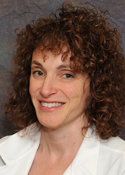

<div>
	<md-content>
		<div class="md-padding">
			<h2 class="text-center">Dr. Helena Schotland MD</h2>
			<!--<div class="text-center">
				
			</div>-->
			<br/>

			<h4>Introduction</h4>
			<br/>

			<p>Dr. Helena Schotland is a division sleep specialist in Internal Medicine. She cares for patients with a broad range of sleep disorders including obstructive sleep apnea, central sleep apnea, nocturnal hypoventilation, narcolepsy, restless leg syndrome, periodic limb movements of sleep, circadian rhythm disorders, parasomnias, and insomnia. Dr. Schotland is the <strong>medical director of the Michigan CPAP Bank</strong>, a recycling program that provides CPAP, BiPAP and ASV machines to patients in need.</p>

			<br/>

			<h4>Video Bio</h4>
			<br/>

			<p>To get a closer look at who Dr. Schotland is, watch a short video about her below, detailing her interests in the field of medicine.</p>
			<br/>

			<div class="text-center">
				<iframe width="420" height="315" src="http://www.youtube.com/embed/qNKfhgRhlZE?autoplay=0"></iframe>
			</div>

			<br/>

			<p>The U of M CPAP Bank is looking for donations, and people in need, as we would love everyone to have a good night's sleep. If you are capable of donating an out of use machine, please look into our <a ui-sref="donate">Donate Today</a> section. If you need assistance with acquiring a machine, please look into our <a ui-sref="aid">Receive Aid</a> section.</p>
		</div>
	</md-content>
</div>